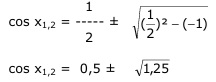
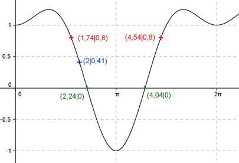
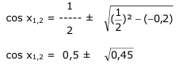

Aufgabe 231 Ergänzen Sie die Wertetabelle für x zwischen 0 und 2π: y = sin2 x + cos x x 2 1,74 oder 4,54 y 0,41 0,8 Periode = 2π Berechnung der Nullstellen: 0 = sin2 x + cos x mit sin2 x = 1 - cos2 x 0 = 1 - cos2 x + cos x |*(-1) cos2 x - cos x - 1 = 0 p = -1 ; q = -1  cos x1,2 = 0,5 ± 1,12 cos x1 = -0,62 --> arc cos - 0,62 = 2,24 gerundet. cos x2 = 1,62 keine Lösung, cos x kann nicht größer als 1 sein. x1 = 2,24 oder 128°, x2 = (2π - 2,24) = 4,04 oder 231,5° gerundet.  Funktionswert an einer Stelle x ermitteln: x = 2 f(2) = sin2 2 + cos 2 = = sin2 114,6° + cos 114,6° = 0,41 gerundet Berechnung der x-Werte für y = f(x) = 0,8 fx = 0,8 eingesetzt, existiert zweimal zwischen 0 und π bzw. 0° und 180° und zwischen π und 2π bzw. 180° und 360° (siehe Graph). 0,8 = sin2 x + cos x mit sin2 x = 1 - cos² x 0,8 = 1 - cos2 x + cos x |*(-1) -0,8 = -1 + cos2 x - cos x |+0,8 cos2 x - cos x - 0,2 = 0 p = -1 ; q = -0,2  cos x1,2 = 0,5 ± 0,67 cos x1 = - 0,17 --> x1 = arc cos - 0,17 = 1,74 oder 100° gerundet. cos x2 = 1,17 keine Lösung, cos x kann nicht größer als 1 sein. x2 = (2π - 1,74) = 4,54 oder 260° gerundet.